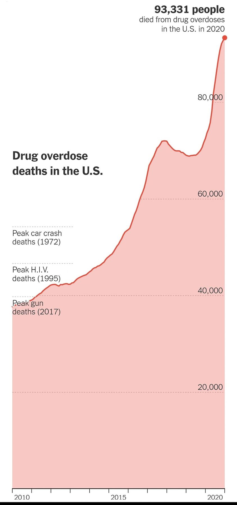

Mobile uploads
White Americans were hit particularly hard in the early years of the opioid epidemic, but in recent years deaths have been growing fast in nonwhite populations. In 2020, overdose deaths grew faster in Black and Hispanic populations than in white ones.